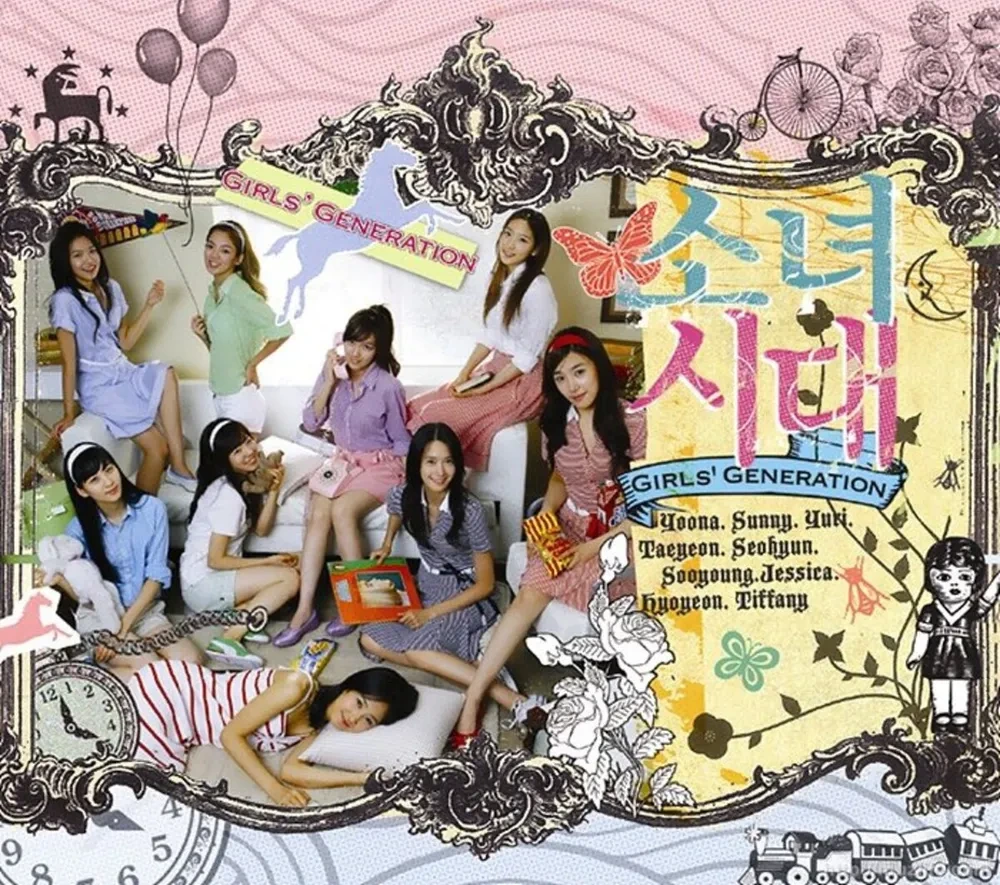

대통령 계엄령의 후폭풍으로 온나라가 시끄럽습니다. 국회에서 윤석렬 대통령의 탄핵 표결이 국민의 힘 의원들의 불참으로 표결조차 되지 않으며, 국민들의 분노는 더 커져가고 있습니다. 오늘도 많은 사람들이 대통령의 탄핵을 위해 여의도로 모여 시위를 하고 있습니다. 그런데, 이번 시민들의 시위는 기존의 촛불 시위와는 다른 양상을 보이며, 평화 시위를 넘어 젊은 세대들의 축제의 장으로 변화하고 있습니다. 외신들도 이런 시위 문화에 주목하고 있습니다. 시위에 빠질 수 없는것이 노래일텐데요, 이전의 아침이슬 등 민중가요라는 틀에서 벗어나 크리스마스 노래와 최근의 가요들까지 개사하여 축제의 장으로 만들고 있습니다.
오늘 소개해드릴 소녀시대의 데뷔곡 다시 만난 세계(2007)는 이번 시위의 대표곡으로 자리잡으며, 단순한 대중가요를 넘어 한국 사회의 저항과 희망을 상징하는 노래로 진화했습니다. 이 노래는 처음에는 반복되는 일상에 지친 현대인들에게 희망과 응원의 메시지를 전하는 곡으로 탄생했지만, 점차 더 깊은 사회적 의미를 획득하게 되었습니다.
정치적 저항의 soundtrack
박근혜 탄핵 촛불집회에서 처음으로 이 노래는 정치적 저항의 민중가요로 주목받기 시작했습니다. 특히 "이 세상 속에서 반복되는 슬픔 이제 안녕"이라는 가사는 당시 상황과 놀랍도록 공명했습니다. 최근 윤석열 대통령 탄핵 촉구 집회에서 다시 만난 세계는 다시 한번 중요한 역할을 하고 있습니다. 젊은 세대들은 이 노래를 통해 정치적 연대와 희망의 메시지를 표현했으며, 단순한 저항을 넘어 공감과 화합의 언어로 활용하고 있습니다. 대중음악평론가들은 이 노래가 세대 간 소통의 중요한 도구가 되었다고 분석합니다. 아이돌 음악은 이제 단순한 엔터테인먼트를 넘어 사회적 메시지를 전달하는 강력한 매체로 자리 잡았습니다.
이 노래의 영향력은 한국을 넘어 국제적으로도 주목받았습니다. 2020년 태국 민주화 운동에서도 이 노래가 불려졌으며, 국제 언론들은 K팝이 정치적 저항의 새로운 형태로 부상했다고 보도했습니다.
소녀시대 다시 만난 세계
다시 만난 세계 노래 가사
1.
전해주고 싶어 슬픈 시간이
다 흩어진 후에야 들리지만
눈을 감고 느껴봐
움직이는 마음, 너를 향한 내 눈빛을
특별한 기적을 기다리지마
눈 앞에선 우리의 거친 길은
알 수 없는 미래와 벽
바꾸지 않아, 포기할 수 없어
변치 않을 사랑으로 지켜줘
상처 입은 내 맘까지
시선 속에서 말은 필요 없어
멈춰져 버린 이 시간
사랑해 널 이 느낌 이대로
그려왔던 헤매임의 끝
이 세상 속에서 반복되는
슬픔 이젠 안녕
수많은 알 수 없는 길 속에
희미한 빛을 난 쫓아가
언제까지라도 함께 하는 거야
다시 만난 나의 세계
2.
특별한 기적을 기다리지마
눈 앞에선 우리의 거친 길은
알 수 없는 미래와 벽
바꾸지 않아, 포기할 수 없어
변치 않을 사랑으로 지켜줘
상처 입은 내 맘까지
시선 속에서 말은 필요 없어
멈춰져 버린 이 시간
사랑해 널 이 느낌 이대로
그려왔던 헤매임의 끝
이 세상 속에서 반복되는
슬픔 이젠 안녕
수많은 알 수 없는 길 속에
희미한 빛을 난 쫓아가
언제까지라도 함께 하는 거야
다시 만난 우리의
br.
이렇게 까만 밤 홀로 느끼는
그대의 부드러운 숨결이
이 순간 따스하게 감겨오네
모든 나의 떨림 전할래
사랑해 널 이 느낌 이대로 (이대로)
그려왔던 헤매임의 끝
이 세상 속에서 반복되는
슬픔 이젠 안녕
널 생각만 해도 난 강해져
울지 않게 나를 도와줘 (도와줘)
이 순간의 느낌 함께 하는 거야
다시 만난 우리의

맺음말
다시 만난 세계는 이제 단순한 노래를 넘어 한국 사회의 희망과 저항, 그리고 세대 간 소통을 상징하는 문화적 아이콘이 되었습니다. 이 노래는 음악이 얼마나 강력한 사회적 메시지를 전달할 수 있는지를 보여주는 생생한 예시가 되었습니다. 오늘 국회 법사위에서 이 노래를 틀고 가사를 읽으며 눈물을 흘린 정청래 위원의 영상으로 이 글을 마치겠습니다.